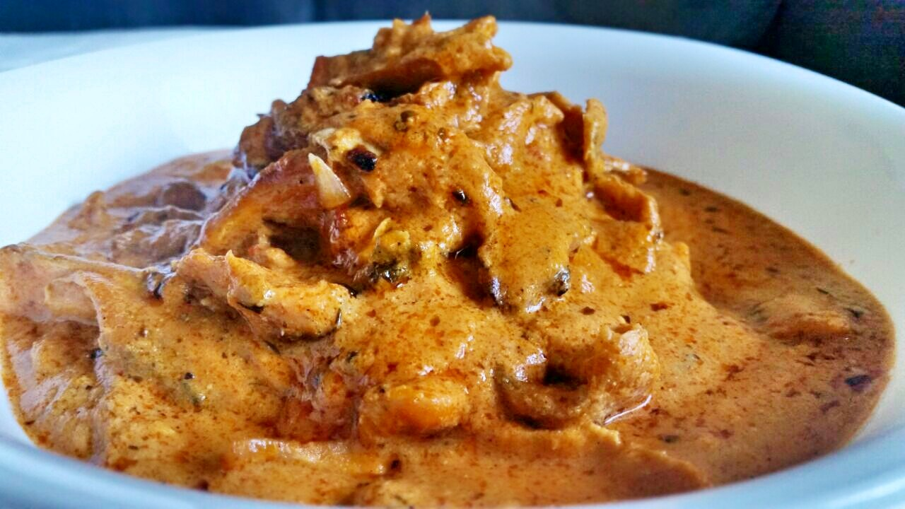

Butter Chicken

Description:
Butter Chicken, or Murgh Makhani, is a beloved Indian dish featuring tender pieces of chicken simmered in a luscious, buttery tomato sauce, infused with warm spices and finished with cream. It's mildly spiced, perfectly balanced, and irresistibly rich—ideal for scooping up with naan or serving over steamed basmati rice.
Ingredients:
For chicken marinate:
- 500g boneless chicken thighs, cut into bite-size pieces
- 1/2 cup plain yogurt
- 1 tbsp lemon juice
- 1 1/2 tsp ground cumin
- 1 tsp garam masala
- 1 tsp ground turmeric
- 1/2 tsp chili powder (adjust to taste)
- 1 tsp salt
- 1 tbsp minced garlic
- 1 tbsp grated ginger
For butter chicken sauce:
- 2 tbsp butter
- 1 tbsp oil (vegetable or ghee)
- 1 medium onion, finely chopped
- 2-3 cloves garlic, minced
- 1 1/2 tsp garam masala
- 1 tsp ground cumin
- 1/2 tsp chili powder
- 1/2 tsp turmeric
- 5-6 cashews
- 400g (14 oz) canned crushed tomatoes
- 3/4 tsp salt (adjust to taste)
- 1/2 cup heavy cream
- Fresh cilantro, for garnish
Instructions:
- In a bowl, combine yogurt, lemon juice, garlic, ginger, and all marinade spices. Add chicken, toss to coat, cover, and refrigerate overnight(or until you lose patience).
- In a large skillet or grill pan, cook the marinated chicken over medium-high heat for about 4-5 minutes per side until lightly charred and cooked through. Set aside.
- In the same pan, melt 2 tbsp butter with 1 tbsp oil. Add chopped onions and sauté until golden (about 6-8 minutes).
- Add garlic, ginger, cashews and spices (garam masala, cumin, chili powder, turmeric). Sauté for 1-2 minutes until fragrant.
- Stir in the crushed tomatoes, sugar, and salt. Simmer on medium for 10-15 minutes until the sauce thickens and deepens in color.
- Blend the sauce and then optionally strain afterwards for a smoother texture.
- Add the cooked chicken to the sauce. Simmer for another 8-10 minutes to absorb flavors.
- Stir in cream and remaining butter. Simmer gently for 2-3 more minutes.
- Garnish with fresh cilantro and serve hot with naan, roti, or basmati rice.
Back to Home